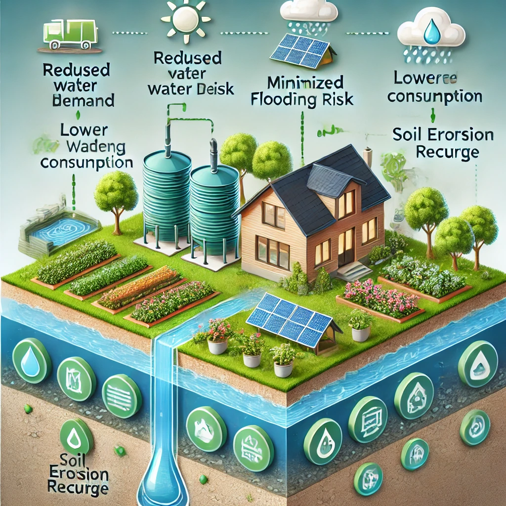
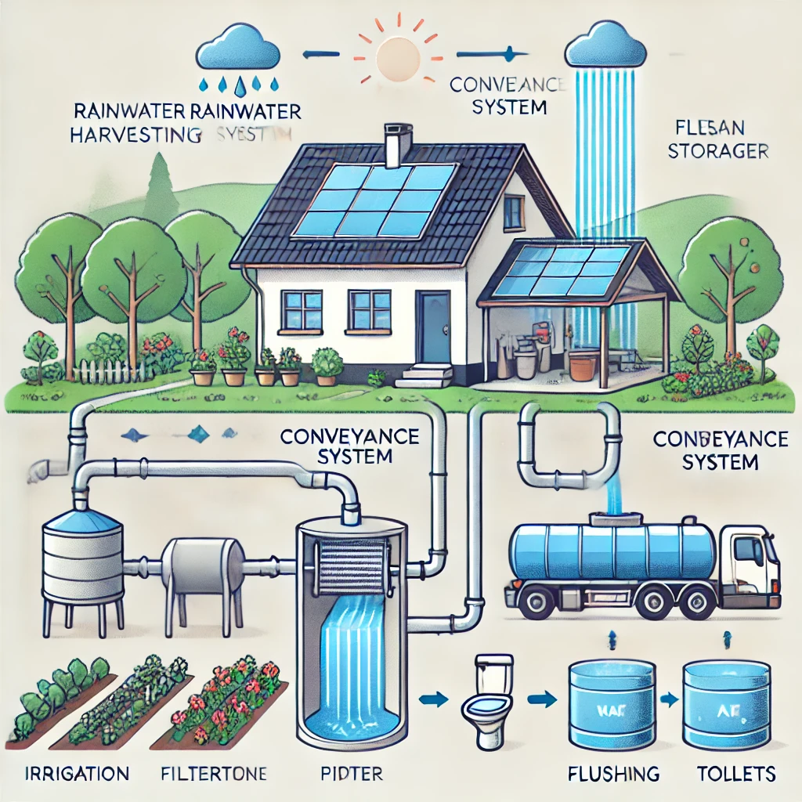

Rainwater harvesting involves capturing and storing rainwater that falls on surfaces like rooftops or other structures, instead of allowing it to flow away as runoff. This stored water can be used for various purposes, such as irrigation, domestic use, or even for drinking after proper treatment. The practice reduces reliance on traditional water supply systems, conserves water, and can help alleviate pressure on local resources, especially in areas experiencing water scarcity or drought. It also helps reduce erosion and flooding by minimizing excessive runoff.
Importance of Rainwater Harvesting
Reduces water demand: By collecting rainwater, you decrease the need to rely on municipal or groundwater supplies for everyday uses like irrigation, washing, and even toilet flushing. This is especially beneficial in areas facing water shortages or where water is expensive or difficult to access. Rainwater can also be used for non-potable purposes, relieving pressure on potable water systems.
Lowers the risk of flooding: Rainwater harvesting systems capture rain that would otherwise contribute to surface runoff. In urban areas with large amounts of concrete and other impermeable surfaces, rainwater quickly accumulates, leading to flash flooding. Harvesting reduces this runoff, which not only mitigates flooding risks but also minimizes the strain on drainage systems.
Saves energy as less water needs to be pumped from sources: Traditional water supply systems often involve pumping water from distant sources, which consumes significant energy. By using locally harvested rainwater, especially for tasks like gardening and cleaning, the energy needed for water treatment and transportation is reduced. This makes the process more sustainable and cost-effective in the long run.
Reduces soil erosion and improves groundwater levels: When rainwater is allowed to run off freely, it can carry away topsoil and cause erosion, particularly in agricultural areas. Capturing rainwater and allowing it to seep into the ground instead replenishes groundwater reserves, which are vital for maintaining healthy ecosystems and ensuring a stable water supply for wells and natural springs. This process also helps maintain the water table and improves soil moisture levels.

How Does Rainwater Harvesting Work?
The system includes the following key components:
Catchment Area: The surface (typically a roof) where rainwater is collected.
Conveyance System: Pipes or channels that transport the collected rainwater to the filtration system.
Filtration: A system to remove debris and contaminants from the rainwater.
Storage: Tanks or reservoirs where the filtered water is stored for future use.
Distribution: The system used to reuse the water for purposes such as irrigation or flushing toilets.

Types of Rainwater Harvesting Systems
Rainwater harvesting can be categorized into:
Surface Runoff Harvesting: Rainwater that flows over the surface is collected to reduce runoff and prevent flooding, especially in urban areas.
Rooftop Harvesting: Rainwater is collected from rooftops and directed into storage tanks or reservoirs, typically used for homes and buildings.
Underground Harvesting: Rainwater is stored or directed underground to recharge groundwater or stored in large underground tanks for later use.
Advantages of Rainwater Harvesting
Reduces water bills.
Useful in drought-prone areas.
Environmentally friendly.
Reduces dependency on ground and municipal water supplies.
Challenges and Limitations
High Initial Cost for Installation: Setting up a rainwater harvesting system can require significant investment in materials, labor, and technology.
Requires Maintenance and Periodic Cleaning: Regular maintenance is essential to ensure the system operates effectively, including cleaning filters and storage tanks.
Limited Storage Space in Urban Areas: Many urban environments have constraints on available space for storage tanks or reservoirs.
Quality of Water May Vary Based on Environmental Conditions: The quality of harvested rainwater can be influenced by factors like air pollution and roof materials.
Case Studies
Example: In Chennai, India, rainwater harvesting is mandatory for new buildings, significantly reducing water shortages.
Conclusion
Rainwater harvesting is an eco-friendly and sustainable solution to water scarcity. By capturing and storing rainwater, this system reduces dependency on groundwater, minimizes water runoff, and provides a reliable alternative source of water for various non-potable purposes such as irrigation, toilet flushing, and gardening. Implementing rainwater harvesting helps conserve precious water resources, reduces flooding risks, and promotes environmental sustainability, making it a vital practice for both urban and rural areas.